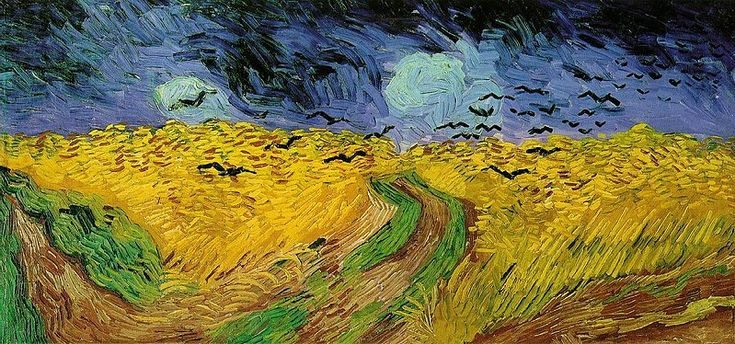

A Symphony of Restlessness: Van Gogh's "Wheatfield with Crows"
Vincent van Gogh's "Wheatfield with Crows," painted in 1890, stands as a poignant testament to the artist's tumultuous emotional state and his profound connection to the landscapes that surrounded him. This masterpiece, created in the final weeks of his life, is a haunting and evocative representation of nature in its raw, emotional form.
The Ominous Landscape
"Wheatfield with Crows" unfolds as a vast expanse of golden wheat, stretching endlessly towards the horizon. The tumultuous sky above, rendered with swirling and foreboding brushstrokes, sets a dramatic stage. Crows hover and swirl in the turbulent atmosphere, adding a sense of restlessness to the scene.
Symbolism and Interpretations
The painting has been the subject of much interpretation, with many seeing it as a reflection of van Gogh's inner turmoil and impending sense of tragedy. The crows, often associated with death and foreboding, circle above the wheatfield, creating an atmosphere of tension and unease. The brooding sky and the desolate landscape contribute to the emotional weight of the composition.
Brushstrokes and Texture
Van Gogh's distinctive brushstrokes are on full display in "Wheatfield with Crows." The thick application of paint, known as impasto, creates a textured surface that adds to the intensity of the scene. The wheat seems to dance and sway with the rhythm of the artist's emotional state, and the crows, though dark, become dynamic elements in the composition.
The Final Strokes
This painting, created in the last weeks of van Gogh's life, has garnered attention as his final artistic statement. The emotional intensity and the turbulent sky have led many art historians to ponder whether van Gogh intended this work to be a reflection of his inner struggles and a farewell to the world he had painted so fervently.
Legacy and Interpretation
"Wheatfield with Crows" has left an indelible mark on the art world, capturing the imagination of viewers and art enthusiasts alike. Its emotional depth and the sense of impending drama make it a subject of ongoing analysis and interpretation. The painting remains a poignant reminder of van Gogh's ability to channel his emotions directly onto the canvas.
Conclusion
As we stand in the presence of "Wheatfield with Crows," we are confronted with the raw emotion and turbulent thoughts that drove van Gogh's final strokes. It is a painting that transcends its physical form, inviting us into the mind of an artist grappling with his demons. In the golden wheat and swirling crows, we witness the unfiltered expression of van Gogh's emotional landscape.
In the words of the artist, "I put my heart and my soul into my work, and have lost my mind in the process."